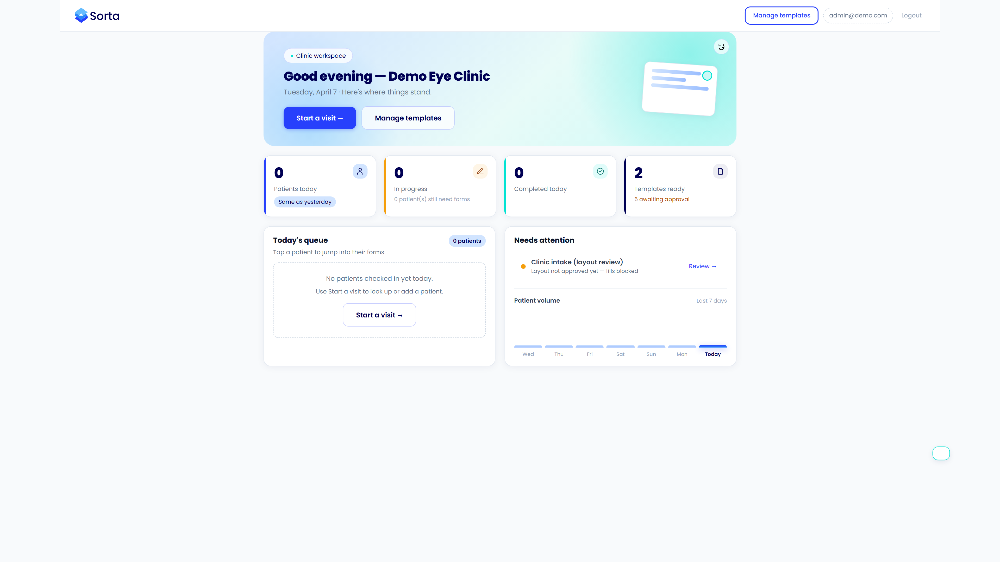
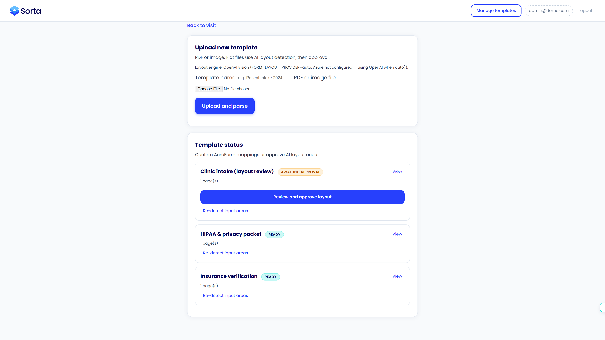

Fits current operations
Keep the processes your staff and providers already understand.
Collect patient information once. Sorta fills every intake, consent, and specialty form your clinic already uses—ready to review before the visit starts.
30 days freeNo credit cardLive in under 12 hours

One patient profile
When a patient or staff member updates a detail, Sorta carries it across the full visit packet. No copy-paste. No conflicting information. No hunting through tabs.

From check-in to finished packet
Sorta sits between patient data and your paperwork, then hands the finished documents back to your staff.
Send a secure link before the visit, or enter the information at the front desk.
Sorta maps each answer into every relevant form in the packet.
Staff checks one complete packet, then prints, signs, or files it as usual.

Modernize without starting over
Sorta handles the paperwork layer around each visit. It does not replace scheduling, clinical decisions, or your system of record.
Keep the processes your staff and providers already understand.
Protected patient data, controlled access, and a clear record trail.
Timestamped snapshots make completed packets easy to trace.
A focused 15-minute walkthrough with the Sorta team. No commitment and no drawn-out sales deck.